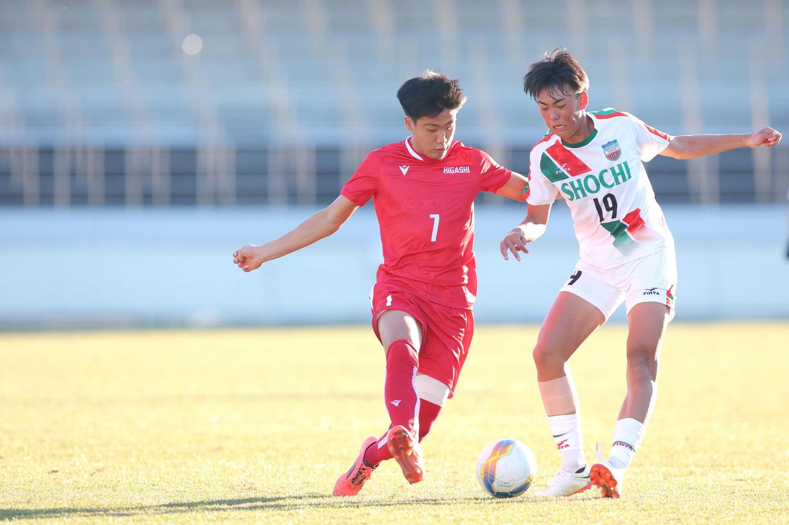

【東の狙撃手】稗田幹男

『引用：サッカーマガジンWeb （写真◎桜井ひとし）
https://soccermagazine.jp/highschool/17741848/album/16828113/image/17158112』

1. 稗田幹男選手のプロフィール
■名前：稗田幹男（ひえだみきお）
■年齢：18歳（2025/02/28）
■生年月日：2006年 11月20日
■ポジション：MF
■所属：東福岡高等学校
稗田選手は現在（2025/02/28）18歳の高校3年生です。
東福岡高等学校に所属しており、第103回全国高校サッカー選手権大会に出場し、チームの第3位にも貢献した選手です。
2. これまでの経歴は？
■小学生：垢田サッカースポーツ少年団
■中学生：垢田中学校
■高校生：東福岡
稗田選手は、第103回全国高校サッカー選手権大会での活躍でご存じの方も多いと思いますが、中体連出身の選手です。
高校サッカーで活躍する選手の多くはクラブチーム出身ですが、稗田選手は山口県の垢田中学出身で、いとこが在籍していたこともあって東福岡に進学したようです。
入学前は「ずっと下のカテゴリーでやるのかな」という不安もあったそうですが、強豪校でもまれる環境が自身にマッチしていたようです。
選手権では、1回戦（vs尚志）、2回戦（vs正智深谷）、3回戦（vs阪南大）、準々決勝（vs静岡学園）、準決勝（vs前橋育英）のすべてに出場し、2回戦（vs正智深谷）では先制点も決めました。
3. どんなプレースタイル？
稗田選手のプレースタイルを一言で表すとしたら、『狙撃手』です。
レアルのバルベルデのような選手で、ミドルレンジからのシュートだけでなく守備にも積極的で中盤を支配します。
特に印象に残っているのは、両足から繰り出されるミドルシュートです。
以下は、第103回全国高校サッカー選手権大会でのプレーとなります。(稗田選手は7番です。)
①0:12~
相手の短いクリアに対してショートバウンドのミドルシュート。
これは個人的な見解ですが、ヨーロッパと比較すると日本はペナ外からのシュートの質や本数が低いように感じます。
格下と対戦する場合、押し込んだ展開になり、守備ブロックが低い相手にはミドルシュートが必須になるのでそれを決めきる選手が重宝されていくと思います。
稗田選手はヨーロッパの選手のように、ミドルの自信と質の高さがあり、大学でもバチバチ決めてほしいですね。
②2:42~
ゴールシーン。逆サイドからワンツーで崩し、フリーになった稗田選手にパス。
ファーに外巻きでコースに流し込む。
相手のプレスバックが遅いこともありましたが、フリーになれるポジションを取り続け、冷静に決めましたね。
③5:50~
守備シーン。相手の伸びたトラップに反応し、身体を入れてボールをガード、パス。
MFではありますが守備意識が高いところも武器のひとつですね。
④9:50~
ルーズボールから短くつなぎ、ダイレクトでCFに付けるパス技術の高さを見せる。
ただここでのメインは守備で、奪われた後の切り替えがチーム一速い。
また、その後のプレスでもSBに対して中央封鎖➡CBに対してSBのパスコース消しながらプレス➡別のCBに対してCBのパスコース消しながらプレス。
カバーシャドウでパスコース消しながら2度追い、3度追いまでする効果的なプレスで相手のビルドアップを終了させましたね。
⑤33:32~
スローイン守備の場面。スロワーに折り返されたボールに二人でサンド、ルーズボールをルーレットでかわしてマイボールに。
左斜め前に運んで右にスルーパス。
スローインでも守備意識と強度は高く、マイボールにできる技術も素晴らしいですね。
⑥18:55~
①と似たような場面。相手の短いクリアに対してショートバウンドのミドルシュート。
得意の形が絶対的な武器になってきてますね。今後が楽しみな選手です。
4. 気になる進路は？
稗田幹男選手は、立正大学（関東2部）に進学予定です。
5. まとめ
- 稗田幹男選手は、東福岡のMFとして選手権第3位に貢献しました。
- 中体連出身の選手ですが東福岡の主力として活躍しました。
- ミドルシュートと守備意識が武器の選手です。
- 立正大学（関東2部）に進学予定です。
このサイトでは、チーム練習と個人練習の2つに分けて、厳選された練習メニューをまとめています。
悪い意味での「伝統的な練習」への疑問。ただボールを蹴るだけの自主練。敗れる理由もわからない無策のチーム。
そんな悩みを解決するためにこのサイトを作り上げました。
蹴練場は日本全国のサッカーファミリーを応援しています。